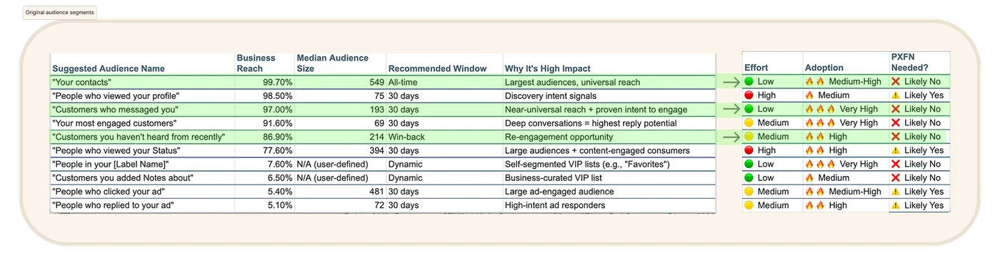
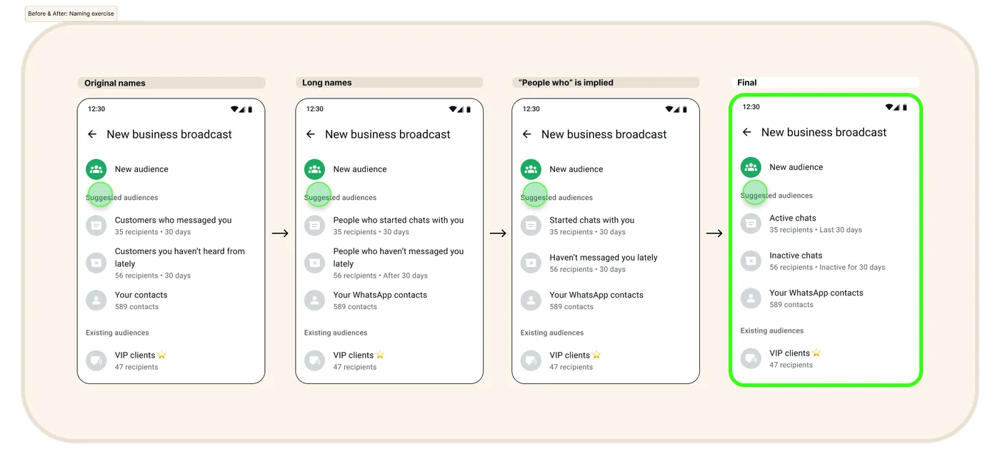
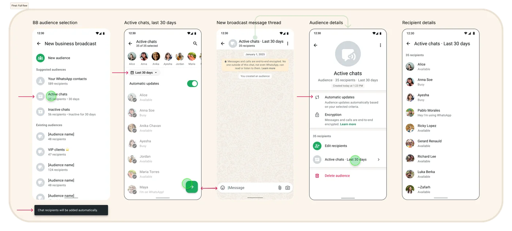
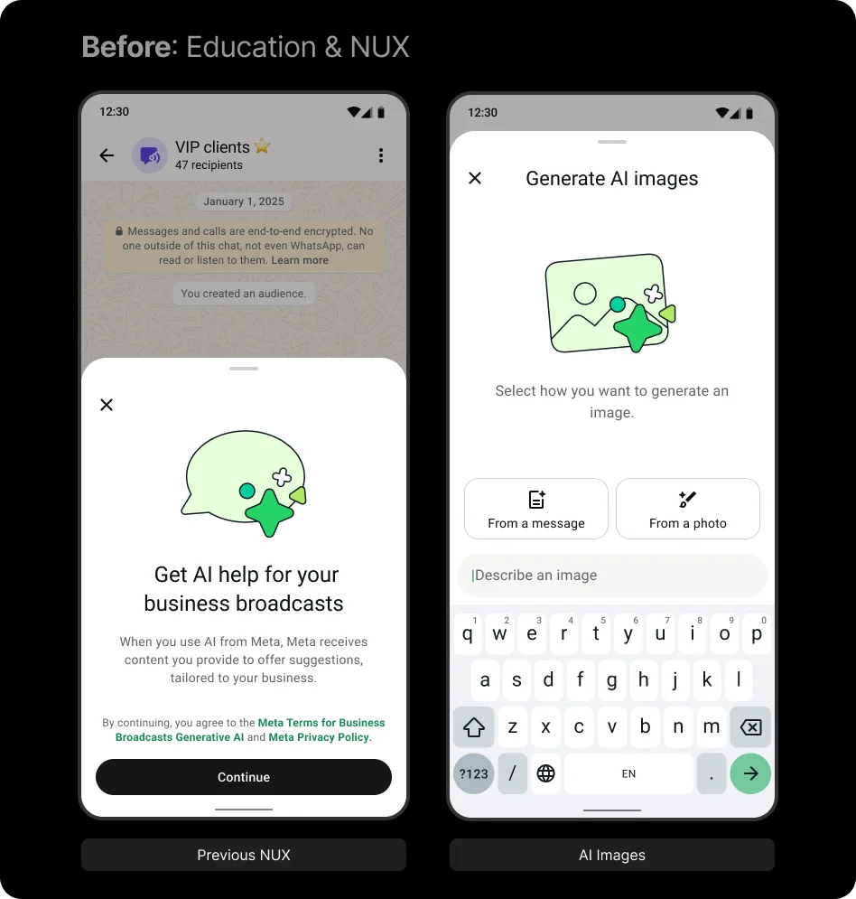
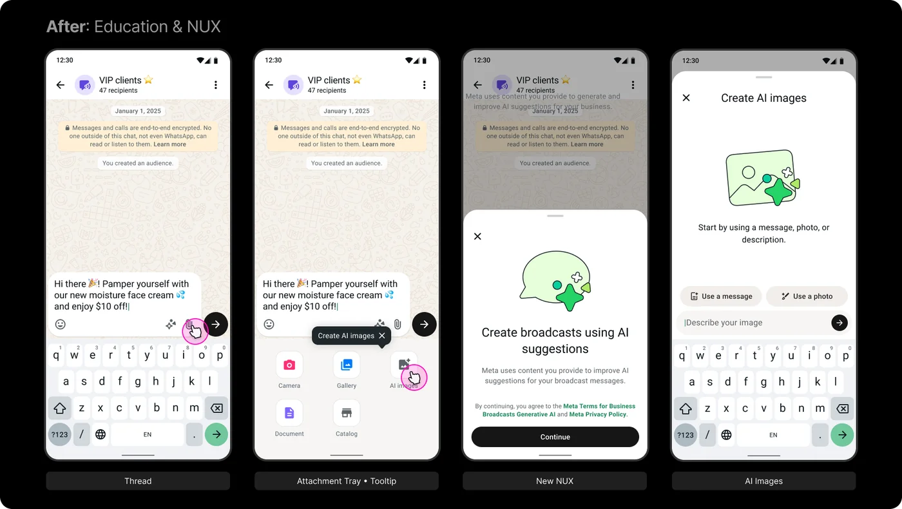
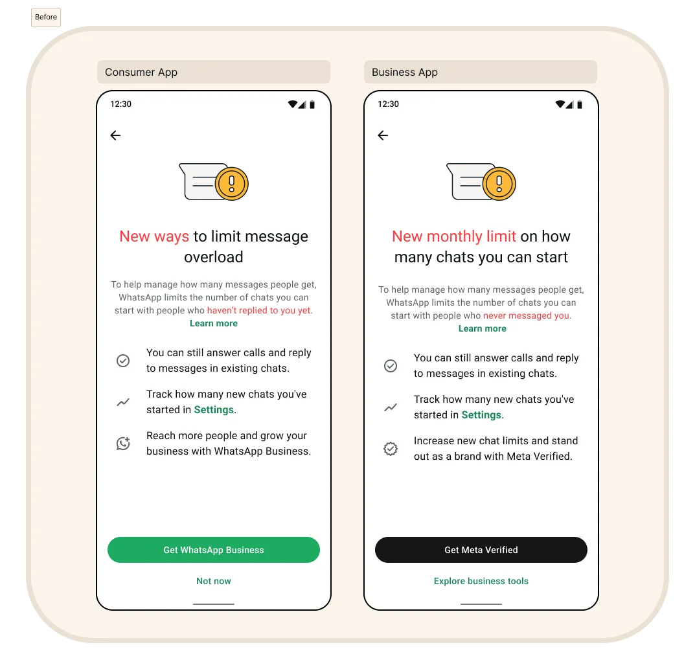
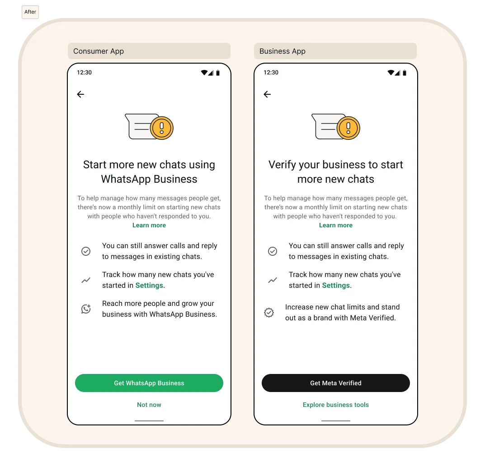
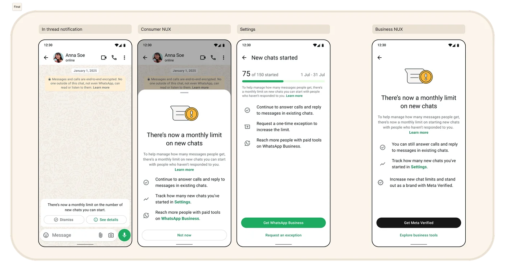

I make complex products feel simple, from naming things to selecting the words that tell your interactive design story.
Selected work
Problem
On WhatsApp Business Broadcasts, there was no naming standard for suggested audiences. The existing labels, like "Customers Who Messaged You" and "Customers Who Haven't Heard From Recently," were inherited from a database spreadsheet that PM and Engineering were used to. Research showed those internal labels were creating real friction for business owners picking an audience in the app.
What I did
I pushed for a naming standard and started with the user journey: don't make people decode the names of their own customers. I ranked candidate audiences by business reach, engagement value, and adoption effort to decide which ones needed a dedicated name. Three rose to the top: your contacts (nearly 100% reach), customers who messaged you (97% reach, with proven intent to engage), and customers you haven't heard from recently (about 87% reach, a real win-back opportunity).
I mapped each audience to a plain description of what it represented, then iterated from the original names to long names to short ones. I landed on "Active chats," "Inactive chats," and "Your WhatsApp contacts." I also flagged that both chat lists used a 30-day cutoff, so the same chat could appear in both. Rather than patch it with copy, I escalated it as a product logic bug and proposed the fix: Active chats cover activity in the last 30 days, and Inactive chats cover 31 or more days without activity. Working across Product, Engineering, Research, and Design, we validated the framework with real users before finalizing it.
Outcome
The names became the standard across all audience surfaces and shipped to 74 countries. Conversions rose significantly and picker time dropped about 29%, because the language made sense to the people using it.
Original audience segments

Before & After: Naming exercise

Final: Full flow

Problem
As content design lead on WhatsApp Business's GenAI Image Composer, a new feature for creating AI images for broadcast messages, I inherited a product-wide default: technical vocabulary baked into the entire GenAI surface. "Generate" implies the AI does all the work and always delivers something perfect. The first time a user gets an image they don't like, the product feels broken, when it's really a tool they're learning to use. That's a trust problem, not a word problem.
What I did
I started with a question: what expectation does "generate" set, and does the product actually meet it? Then I mapped the content journey so every message felt like part of one creation pattern. The original flow said "Get AI help for your business broadcasts," opened a "Generate AI images" composer, and asked users to generate "From a message" or "From a photo."
I rewrote it around "create": "Create broadcasts using AI suggestions," a composer called "Create AI images," and a prompt to "Start by using a message, photo, or description." Businesses already knew how to create broadcasts, so the language told them AI was helping them create, not taking over.
Outcome
"Create" was adopted as the standard across GenAI surfaces in the WhatsApp Business app. Results were statistically significant across all three message measures.
Before

After

Problem
We were designing a new user experience (NUX) for message capping, and the teams disagreed. PM, GTM, and PMM saw a feature launch: "New ways to limit message overload," with a CTA to "Get WhatsApp Business." Legal saw a safety signal: "New monthly limit on how many chats you can start," with a CTA to "Get Meta Verified." The real problem wasn't the copy. The teams disagreed about what kind of event this was, and the copy reflected that confusion.
What I did
I pointed out that we weren't announcing a feature. We were setting a standard. I rewrote the copy around three things: what changed, why, and what a business could do about it. The cap was set high enough that accounts hitting it were likely spammers, so the language didn't need to guard against that fear. It needed to show real businesses a path forward. PM and I proposed a direct upsell: "Start more new chats using WhatsApp Business" for consumers and "Verify your business to start more new chats" for businesses.
GTM pushed back, worried that naming the cap directly would create consumer backlash. I disagreed, but I needed something we could all ship. So I reframed it as a standalone half-sheet with a toast notification: no editorial framing or value prop, just the facts. "There's now a monthly limit on new chats" became the headline everyone agreed on. The in-thread notification and consumer NUX carry informational links only, and the upsell lives in Settings, where people track their chat volume and expect commercial messaging. GTM controls many downstream surfaces, so I held the strategic frame while making room for their concern.
Outcome
Informational messaging became GTM's standard going forward. Message capping contributed to a 170% incremental revenue increase for Business Messaging Monetization in spring 2026, with 53 review comments resolved without escalation.
Before

After

Final

More
Apple
Consolidated a confusing multi-step process into a single screen with one central message, reducing friction for families setting up purchase sharing.
Simplified onboarding flowApple
Rewrote a cryptic "Communication Preferences Update" email, surfacing the change upfront, adding deep links and support article references, to reduce support tickets and build trust.
Fewer support ticketsApple
Designed the full content system for a new subscription commitment model: entry point, landing page, cancellation, downgrade, auto-renew notification, and renewal sheet.
End-to-end content systemSurfaced third-party reseller purchase options clearly on one panel, reducing confusion that had driven avoidable support contacts.
Lower support volumeRewrote cancel-flow copy to separate downgrade benefits from cancellation consequences, with clearer CTAs that drove more users to downgrade instead of canceling outright.
Higher downgrade conversionSet a goal of 750 strings reviewed in 3 months. Built a scalable TextID-based workflow and reviewed 3,500+ strings, 4× the target, without changing underlying code.
3,500+ strings · scalable processApple
Designed test variants: "Create Apple Account" vs. "Create Your Account" vs. "Create an Account" to surface which framing best boosted sign-ups and lowered bounce rates.
Boosted sign-ups & reduced bounceCharles Schwab
Designed dual-view content for margin and options trading: advisors see full strategy details, clients see only what's been selected, reducing trading errors and improving trust.
Fewer trading errorsCharles Schwab
Simplified an overly apologetic, multi-line 404 into two words and one sentence. Shifted ownership: "Can't find page" (our issue) became "Page not found" (accurate framing).
Reduced cognitive loadLinks
About
Meta
Senior Content Writer, WhatsApp Business Monetization
Content leadership for a $1B+ product line. Drove naming standards, NUX, GenAI integration, and cross-functional alignment across WhatsApp Business.
Apple
Senior Content Writer, App Store & Subscriptions
Designed content for subscription flows, onboarding, and transactional communications at scale across iOS and macOS surfaces.
Charles Schwab
Senior Content Writer
Designed content for advisor-client products and B2B digital onboarding, improving task completion and reducing support volume.
Senior Content Writer, Workspace
Owned content for G Suite billing, subscriptions, and enterprise onboarding flows. Built scalable string-review process across large localization projects.
I'm a Senior Content Strategist and Copywriter with a career spanning Meta, Apple, Google, Schwab, and beyond. I specialize in high-stakes, regulated, and monetization-sensitive environments where the words have to earn their place.
My work lives at the intersection of clarity, systems thinking, and user trust. I believe the best content decisions come from understanding the whole product, not just the string.
When I'm not writing, I'm at Stinson Beach, walking my beagle Princess Leia, or sharpening my storytelling at Toastmasters.